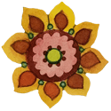

Before you click! - The animation of my chosen microinteraction only happens when the page is loaded the first time.
Look in the top, left corner at the orange *star* -
Current - The trigger for this microinteraction is when the page is loaded the very first time, after clicking its link or typing its url.
Redesign - I would like to change the trigger to be on hover.
When triggered, the astrix/star shape in the header spins for 1.17 seconds. It's very simple, but I was surprisingly delighted the first time I saw it. It added a sort of fun greeting, "Welcome to the page!"
Current - The only thing that changes is the trigger conditions. This animation only shows on the first page load. If the user has visited the page once, when they reload it or open it in another tab, it doesn't play for a while.
Redesign - I will eliminate this condition and let the microinteraction happen any time a user hovers.
I will animate this image instead of the star/astrix -
